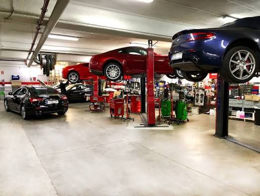
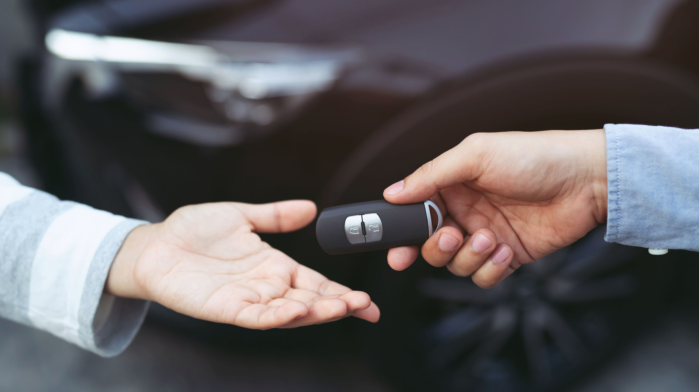

At AutoConnect, we are passionate about making every journey easier, safer, and more reliable. We are an automotive company dedicated to providing quality vehicle rentals, car sales, and professional repair and maintenance services.
Our goal is to give our customers a seamless automotive experience, whether they need a reliable car for a short trip, are looking to purchase their next vehicle, or need expert care for their existing car.
With a commitment to quality, reliability, transparency, and customer satisfaction, we work to ensure that every customer receives dependable vehicles and professional service they can trust.
At AutoConnect, we don’t just provide cars, we connect people to reliable mobility solutions.
🚗 Car Rentals
Enjoy convenient and reliable transportation with our range of well-maintained vehicles available for short-term and long-term rental. Whether it’s for business, travel, events, or everyday use, we have options to suit your needs.
🚘 Car Sales
Looking for your next vehicle? We offer quality vehicles for sale and help customers find a car that matches their preferences, lifestyle, and budget.
🔧 Car Repairs & Maintenance
Keep your vehicle performing at its best with our professional repair and maintenance services. From routine servicing to diagnosing and fixing mechanical issues, our team is committed to keeping you safely on the road.
🛠️ Vehicle Diagnostics
Our diagnostic services help identify vehicle problems quickly and accurately, allowing us to recommend the right solution and get your car back in good condition.
🔩 General Auto Services
We provide a range of automotive services designed to maintain your vehicle's reliability, performance, and safety.
EMAIL: Autoconnect@info.org
PHONE: +233 (0) 255 323 1264

